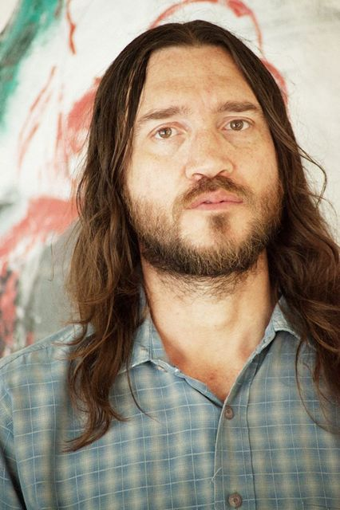
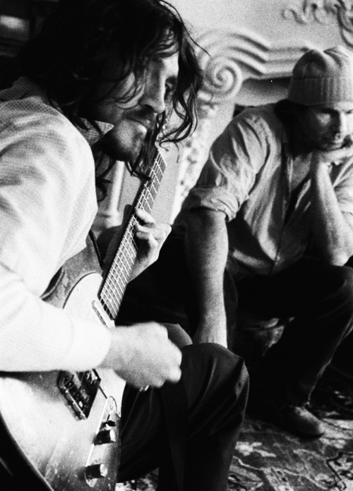

{kind=link}

„Zagranie rockowej solówki gitarowej albo napisanie znakomitej rockowej piosenki jest dla mnie czymś, co mogę zrobić z miejsca, bez konieczności zastanowienia się. Niestety, przestało to już być dla mnie jakimkolwiek wyzwaniem.”
Kompletna kompozycja, perfekcyjna wolność [Complete composition, perfect freedom]
John Frusciante, jak zapewne wiecie, to człowiek, który jako gitarzysta pomógł monstrualnej kapeli rockowej Red Hot Chili Peppers zdobyć scenę muzyczną lat 90. ze swoim zaciekłym funk-rockowym stylem. I nawet teraz cieszy się niesłabnącym poparciem fanów. Frusciante dołączył do zespołu, by zapełnić wakat, ale dał pokaz wspaniałych umiejętności zarówno jako gitarzysta, jak i współ-kompozytor kawałków, pomagając kapeli stworzyć utwory z emocjonalnym liryzmem. Zapewne wielu jest fanów z tamtego okresu, jak i miłośników jego muzycznej działalności od czasu opuszczenia zespołu jako artysta solowy – współpracujący też z innymi muzykami – piętrzący wiele albumowych wydawnictw.
Przypuszczalnie mnóstwo ludzi jest zdania, że z racji swoich najwyższych umiejętności i unikalnego stylu powinien trzymać się wyłącznie gry na gitarze. Dwa wydawnictwa z zeszłego roku pokazały, jak dalece odbiegł od tych oczekiwań, aczkolwiek te wyjątkowe dzieła, Letur-Lefr i PBX Funicular Intaglio Zone, zdobyły mimo to duży szacunek. Niezwykłe jest to, jak elektronika – dawniej używana wyłącznie eksperymentalnie – stała się teraz głównym, wszechobecnym aspektem, oraz jak bardzo synth-pop i drum-n-bass ubarwiły te albumy. A co właściwie stoi za tą zamianą gitary na sampler i syntezator?
Dowiemy się tego prawdopodobnie z poniższego wywiadu, przeprowadzonego przez Hashima Baruchę odnośnie nowego dzieła Frusciantego, Outsides, które w tym tygodniu pojawiło się w sprzedaży. Rozmowa (mimo iż jest to głównie monolog Frusciantego) zawiera ok. 30 000 znaków i ten ekskluzywny wywiad niewątpliwie będzie jedną z kluczowych zalet japońskiej edycji. W miarę czytania i rozkoszowania się nowym wydawnictwem, które zostało stworzone z udziałem RZA i innych członków rodziny Wu-Tang Clan, z pewnością zapragniecie doczytać to do końca.
Świadomość, że gitarowe solo zawierające się w 10-minutowym utworze Same „ilustruje proces i precyzję, jakie składają się na ukończenie albumu”, pomoże wam pogłębić wasze rozumienie nowych utworów.
Barucha Hashim: Po wydaniu The Empyrean oraz odkąd tylko wyszło Letur-Lefr, włączyłeś do swojej pracy sporo muzyki elektronicznej. Dlaczego tak?
John Frusciante: Spędziłem niemalże całe życie ucząc się muzyki z płyt. Przez ostatnie 30 lat przeważnie tak właśnie spędzałem swój czas. Dzięki temu byłem w stanie nauczyć się czegoś o wielu różnych gatunkach muzycznych.
W czasie mojego ostatniego powrotu do Red Hot Chili Peppers grałem dużo na gitarze, słuchając przy tym synth-popu, muzyki rave lat 90tych, hip-hopu i muzyki elektronicznej bazującej na komputerach. Grając na gitarze pod tego typu muzykę, odkryłem, że zastosowanie sampli i elektronicznych instrumentów wymaga całkowicie innego podejścia niż podczas gry na gitarze. Gitarzysta i producent muzyki elektronicznej tworzą piosenki kierując się zupełnie innym procesem myślowym i nie łączą nut w ten sam sposób. Zagranie rockowej solówki gitarowej albo napisanie znakomitej rockowej piosenki jest dla mnie czymś, co mogę zrobić z miejsca, bez konieczności zastanowienia się. Niestety, przestało to już być dla mnie jakimkolwiek wyzwaniem.
Ale rytm i frazowanie w muzyce elektronicznej ostatnich 30 lat, to, jak zapoczątkowały one nowy sposób dzielenia każdego taktu… cóż, dla mnie był to nieznany świat. Pomimo bycia doświadczonym gitarzystą, nie mogłem zrozumieć procesu myślowego kryjacego się za Autechre, Venetianem Snares’em czy Aphex’em Twinem. Nawet mimo tego, że potrafiłem odtworzyć ich utwory na gitarze, sam nie potrafiłem stworzyć podobnej muzyki. Sposób, w jaki łączyli ze sobą nuty, był dla mnie niedościgniony. Kiedy wyszła seria „Analord” Aphex’a Twina, było to dla mnie na jednakowym poziomie z przełomowym wydawnictwem Beatlesów, „Sgt. Pepper’s Lonely Hearts Club Band„. Poczułem, jakby był to nieznany świat, który dał mi możliwość poszukiwania. Był to dla mnie nowy typ muzyki funk.
Muzyka funkowa rozwinęła się w latach 60tych i 70tych, jednak nie ewoluowała jakoś znacznie w latach 80tych i 90tych, ale zdałem sobie sprawę, że seria „Analord” Aphex’a Twina pchnęła funk naprzód, poprzez elektronikę. Stosując się do tradycji funku, pchnęła go naprzód w sposób nie mający z tradycją wiele wspólnego. Do czasu zakupu sprzętu takiego jak 202 i 303 [synth-sekwencer MC-202 Microcomposer od Rolanda i basowy synth-sekwencer TB-303 od Rolanda, podstawowy sprzęt w muzyce acid house; przyp. redaktora IM.net] nie wiedziałem nawet, że taki sprzęt istnieje. Miałem rozmaite doświadczenia z syntezatorem, ale kiedy zapytałem, jaki instrument powinienem kupić, żeby robić muzykę elektroniczną, używając profesjonalnego syntezatora, polecono mi, bym optował za łatwym w użyciu syntezatorem, takim jak Nord Lead. Zakupiłem takowy i wypróbowałem go, ale ten instrument mnie nie zainspirował. Wiedziałem o istnieniu syntezatorów analogowych, jak wspomniany już 202, i kiedy spróbowałem taki zaprogramować, okazało się to być bardzo ekscytujące. Pomyślałem, że żeby zdać sobie sprawę z mojego poczucia melodii poprzez 202, muszę kompletnie przemyśleć moje podejście do melodii w ogóle.
Nie byłem jeszcze zaznajomiony ze sposobem posługiwania się 202, ale odkryłem, że można wynaleźć melodie, o których wcześniej się nawet nie pomyślało. Jako muzyk zauważyłem, że mamy tendencję do powtarzania tych samych motywów. Kiedy wyruszyłem w trasę z RHCP, wziąłem ze sobą machinę perkusyjną i syntezator, żeby skompensować sobie nudę w hotelach, ale wciąż robiłem piosenki w ten sam stary sposób oparty na zwrotce i refrenie. Chciałem wyłamać się z tego schematu i stworzyć melodie z bardziej warstwowych struktur.
Tak naprawdę to nigdy nie uczyłem się, jak używać 202, tak więc kiedy w końcu nauczyłem się jak, to zdałem sobie sprawę, jak stworzyć melodie, o których mie śniłem w najśmielszych snach. Jako muzyk dostrzegłem, że mamy tendencję do opierania się na tych samych, powtarzanych do znudzenia wzorach melodycznych.
Porównując muzykę elektroniczną do popu, pop bliski jest Mozartowi, podczas gdy elektronice bliżej do Beethovena. Chodzi o to, że jeden konkretny element muzyczny staje się raczej punktem skupiającym, aniżeli jedyną podstawą czy głównym składnikiem, a przeróżne inne elementy muzyki piętrzą się i składają się ze sobą w tym samym czasie i są równie ważne. Innymi słowy, wsytępują wielorakie punkty skupiające. W muzyce elektronicznej beat perkusyjny w wielu przypadkach staje się centrum. Ale w muzyce rockowej to wokale są punktem skupiającym. A zatem jeśli chcesz doświadczyć całkowitej wolności ekspresji w elektronice, musisz podejść do melodii w zupełnie inny sposób.
Jako dziecko zacząłem grać [lub uczyć się – niejasności wynikają z przekładu wywiadu z języka japońskiego; przyp. tłum.] jazz. W tamtym czasie zupełnie go nie rozumiałem i to właśnie dlatego chciałem się go uczyć. Był to zupełnie inny rodzaj muzycznego myślenia niż to, do jakiego sam byłem wtedy zdolny, tak więc pragnąłem nauki, ażeby sprawdzić, czy potrafię podejść do muzyki w odmienny sposób. Tak więc w tamtym czasie rozpoczęła się moja przygoda z muzyką Johna Coltrane’a i Miles’a Davis’a. W ten sposób nauczyłem się nowego sposobu myślenia. Kontynuuję ten proces przez całe życie. Doszedłem do wniosku, że w momencie, w którym wkracza się w świat muzyki elektronicznej, trzeba nauczyć się nowego podejścia. Jesteśmy otoczeni przeróżnymi elektronicznymi urządzeniami, z których każde wymaga odmiennego programowania. Naciskasz przycisk ‘play’ w jednym z urządzeń i jest ono całkowicie zsynchronizowane z każdym innym sprzętem elektronicznym.
Było to dla mnie czymś nowym i pokrzepiającym. Doznaniem absolutnego wyzwolenia się, które wyswobodziło mnie od niewłaściwego mniemania, że sam jestem niczym więcej, jak tylko jedną z części większej układanki. Odkryłem, że mogę tworzyć całość zupełnie sam. Zamiast być jedynie jednym z muzyków, mogłem od teraz stać się kompozytorem.
{kind=link}

„To zabawne. Perkusista jest obdarzony bardzo silną pozycją w zespole, a mimo to bębniarze nie piszą piosenek – biorąc pod uwagę to, jak kluczowa jest rola perkusisty, uważam to za osobliwe.”
Granie na gitarze będąc członkiem kapeli jest często bardzo ograniczające. Kiedy piszesz piosenki jako gitarzysta zespołu, zapewniasz jedynie projekt. Kiedy robisz muzykę elektroniczną, możesz zaangażować się w proces twórczy, który nie jest ograniczony tradycyjną sztuką pisania piosenek. Możesz wtedy budować utwory zaczynając od abstrakcyjnego pomysłu. Co więcej, mając całkowitą kontrolę, potrafisz bezpośrednio kierować dźwiękiem. Zamiast po prostu grać dzięki zmienianiu tonu instrumentu, istnieje możliwość wykreowania harmonicznego tonu, zmieniając ten ton sam w sobie.
W zespole trzeba grać na swoim instrumencie zgodnie z harmonią wytworzoną przez pozostałych muzyków. Kiedy grasz w kapeli, nie masz wyjścia, tylko musisz grać wraz z perkusistą, a w muzyce elektronicznej możliwe jest bardzo dokładne kontrolowanie rytmu. W zespole jesteś zmuszony grać poprzez obserwację bębniarza i kiedy on przyspiesza tempo, ty również musisz zwiększyć prędkość swojej gry. Podobnie, kiedy perkusista zmniejsza prędkość, ty także musisz zwolnić. To zabawne. Perkusista jest obdarzony bardzo silną pozycją w zespole, a mimo to bębniarze nie piszą piosenek – biorąc pod uwagę to, jak kluczowa jest rola perkusisty, uważam to za osobliwe.
Kiedy elektronikę tworzy się samemu, jest się perkusistą i – tworząc wszystkie partie – można całkowicie wytworzyć brzmienie. Eliminuje się obawy o inżyniera dźwięku, który tak naprawdę nigdy nie jest do końca pewny, czy trafnie odczytał wizję brzmienia muzyka. Dla mnie tworzenie muzyki elektronicznej oznacza, że mogę być całkowicie swobodny w kontekście muzyki. Powiedziałbym nawet, że muzyka rockowa jest w zasadzie muzyką elektroniczną.
Dla wielu spośród podkategorii gatunków muzycznych nie istnieje tak naprawdę żadne wytłumaczenie w teorii. Dla przykładu, zabawne jest określenie rocka ‚alternatywnego’. To przecież po prostu zwyczajny ‚rock’. Nie pojmuję, dlaczego przylgnęła do niego taka łatka (śmieje się). To jedynie logiczna ewolucja muzyki rockowej. Rock alternatywny był zwyczajnie alternatywą względem rocka granego wcześniej – innym możliwym określeniem na ten gatunek. Co to za gatunek muzyki z tego alternatywnego rocka? To jedynie alternatywa względem muzyki z przeszłości (śmieje się).
Niektórzy ludzie traktują muzykę elektroniczną i rocka jako coś kompletnie odmiennego, ale gdyby nie ludzie, którzy tworzą płytki obwodu drukowanego [płytka z materiału izolacyjnego, przeznaczona do montażu podzespołów elektronicznych; przyp. tłum.], muzyka rockowa w ogóle by nie istniała. Bez wzmacniaczy, przetworników, sprzętu do nagrywania i kart dźwiękowych nie byłoby muzyki rockowej. Jesteśmy więc podlegli elektronice. Skutkiem tworzenia muzyki elektronicznej od wielu lat i studiowania jej, zacząłem patrzeć na muzykę rockową w zupełnie inny sposób. Kiedy słuchasz rocka w dzisiejszych czasach, słyszysz sposób pracy inżyniera dźwięku i charakterystykę pokoju, w którym powstało nagranie. [Bycie w rockowym zespole] zmusiło mnie do tego, bym w równym stopniu przysłuchiwał się także temu, jak oryginalne instrumenty wybrzmiewają poprzez wzmacniacz. W takim sensie, muzyka rockowa i elektroniczna są jednym i tym samym. Rockowa część mnie stopniowo zintegrowała się z moją częścią lubującą się w muzyce elektronicznej.
Dla przykładu, jest parę rockowych kawałków na PBX, ale było to produkowane z pomocą abstrakcyjnej muzyki elektronicznej i z drum n’ bass’owym podejściem [oryg. jungle – tak nazywano na początku drum n’ bass; przyp. tłum.]. Nigdy nie myślałem, że będę zdolny do tworzenia piosenek w ten sposób. Gdy uczyłem się tworzyć muzykę elektroniczną, nawet nie myślałem o czymś takim. Teraz nie czuję już ograniczenia, by tworzyć w obrębie jednego gatunku. Moje podejście to połączenie wielu stylów i swobodnie wcielam każdy muzyczny element, jaki tylko we mnie jest. Są w to włączone zarówno muzyczne elementy, jakie były częścią mnie 20 lat temu, jak i muzyczne elementy, jakie były częścią mnie 10 lat temu. Nie ma żadnej pustej przestrzeni pomiędzy muzyką a mną.
W przypadku orkiestry i zespołów rockowych zawsze występuje pewien rodzaj ściany oddzielającej muzyków od muzyki. Na przykład, pomimo iż to kompozytor stworzył dzieło, potrzeba dyrygenta oraz orkiestry, więc mogą się pojawić sytuacyjne problemy, by w pełni spełnić życzenia kompozytora.
W muzyce elektronicznej kompozytor jest całkowicie wyzwolony. Ponieważ by uświadomić sobie brzmienie, które słyszy w swojej głowie, nie jest już zależny od innych ludzi. Dodatkowo, może słuchać muzyki, którą tworzy, w czasie rzeczywistym. Już nie ma potrzeby pokazywania kompozycji zespołowi i czekania by usłyszeć, jak to w ich wykonaniu zabrzmi. Ponieważ tworzenie i słuchanie ma miejsce w tym samym czasie, co oznacza dla mnie najwspanialszą wolność. Tworzenie muzyki elektronicznej daje mi największą muzyczną wolność, ponieważ to najbardziej kompletne podejście do tworzenia muzyki.
Oryginalne źródło: RHCPmania.pl
Przetłumaczyli: Marcelina_W oraz Chadwick (cztery ostatnie akapity)